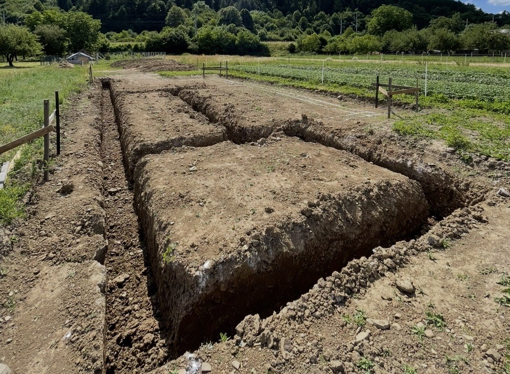
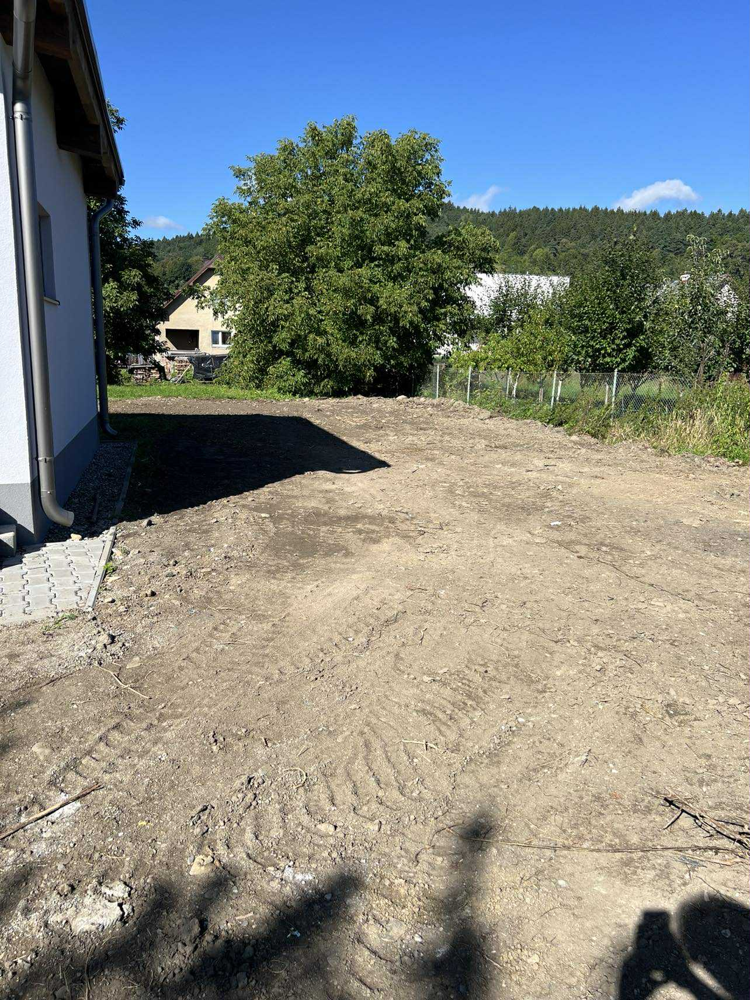
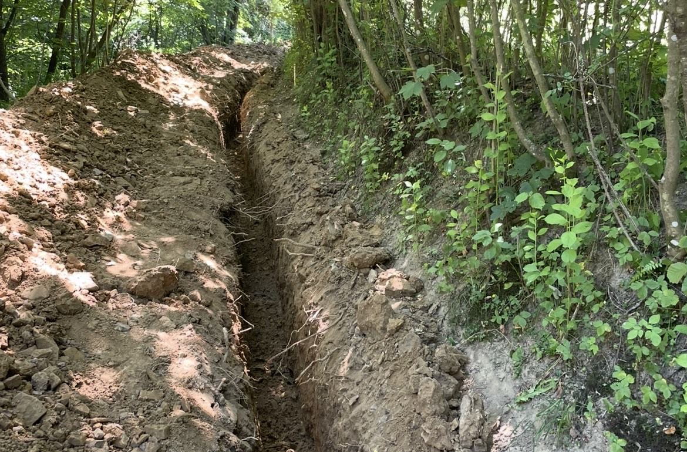
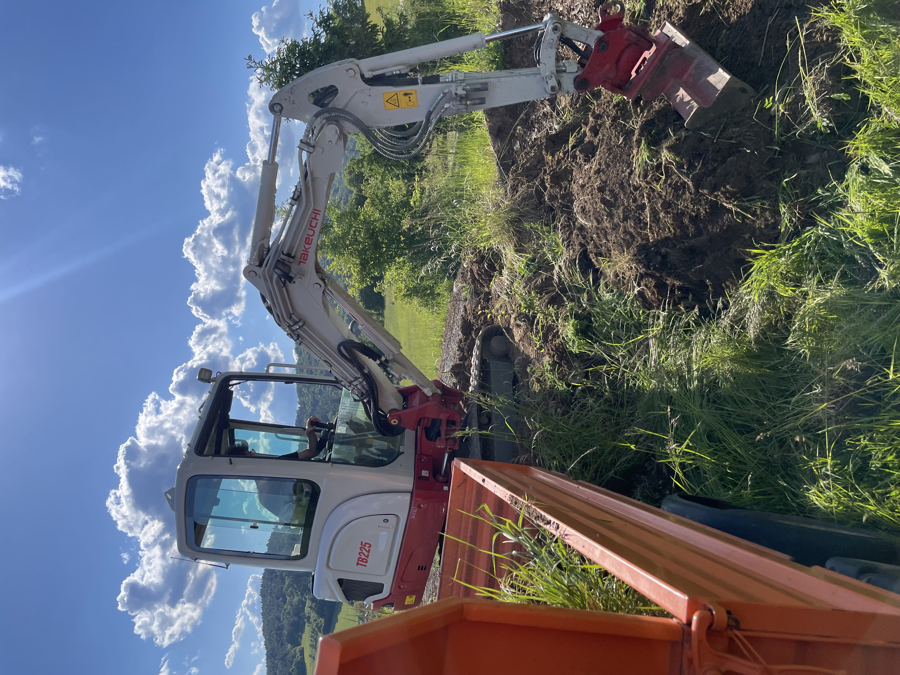
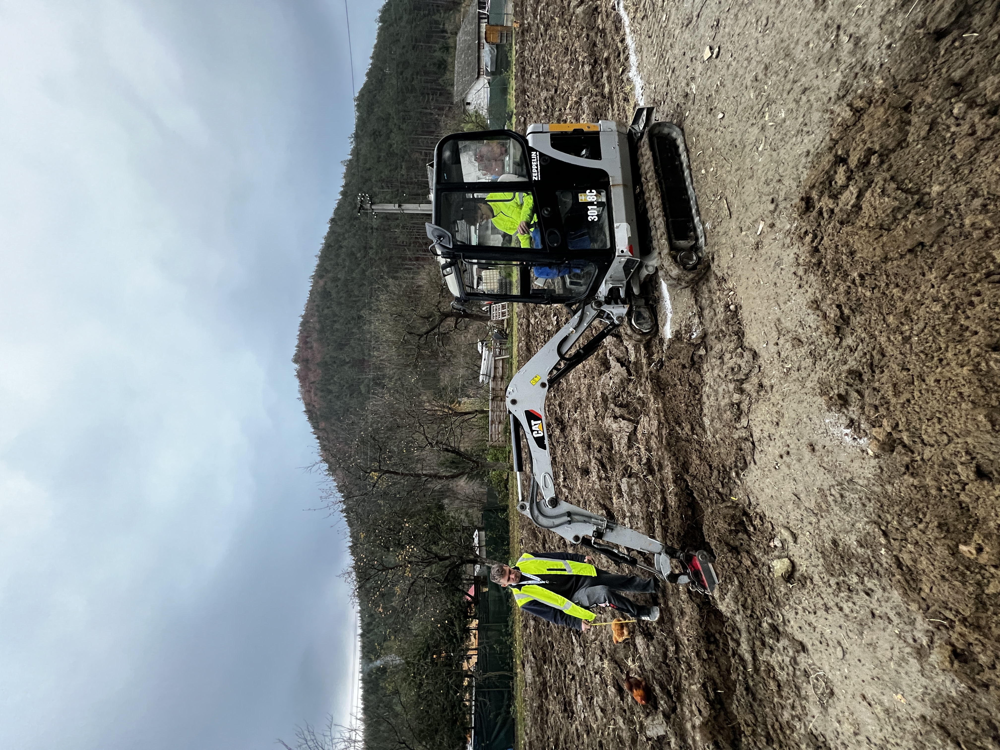
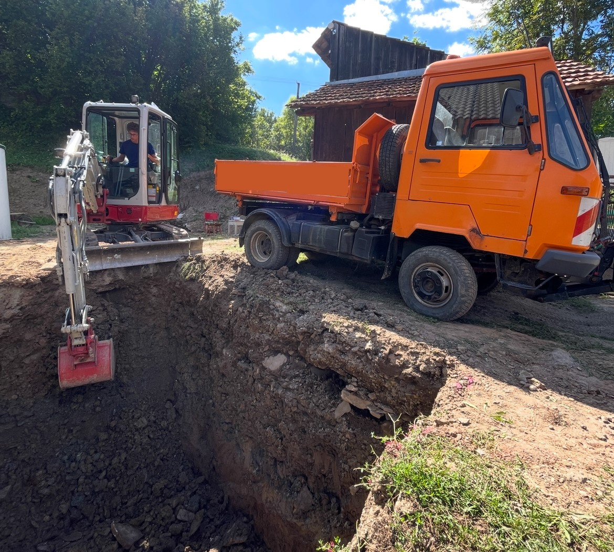

Zemné a výkopové práce Považská Bystrica a okolie
Poskytujeme služby v oblasti zemných prác a výkopov. Spoľahlivé stroje, skúsená obsluha, férové ceny.
Čo ponúkame?
Špecializujeme sa na komplexné riešenia v oblasti zemných a výkopových prác
Výkopové práce
Profesionálne výkopy pre základy, bazény, pivnice a inžinierske siete.
Terénne úpravy
Vyrovnávanie pozemkov, svahové úpravy a príprava terénu pre stavby.
Preprava materiálov
Preprava sypkých materiálov až ku Vám domov.
Prenájom strojov s obsluhou
Prenájom bágrov a stavebnej techniky s obsluhou na krátkodobé aj dlhodobé projekty.
Naše stroje
Caterpillar 301.8
Pásové minirýpadlo s hmotnosťou 1900 kg.

Sklápač IVECO Daily
Možnosť odviezť až 3,5 tony. Ložná plocha 300x200cm.
Prečo si vybrať práve nás?
Nájdeme riešenie pre každý Váš projekt
Profesionálni a skúsení operátori
Dodržiavanie termínov a rozpočtu
Pracujeme aj cez sviatky a víkendy
Flexibilita podľa potrieb zákazníka
Naše práce






Kontaktujte nás
Sme tu pre vás - neváhajte nás kontaktovať s akoukoľvek požiadavkou
Telefón
+421 948 060 441
Pracovná doba: Po-Ne 6:00-20:00